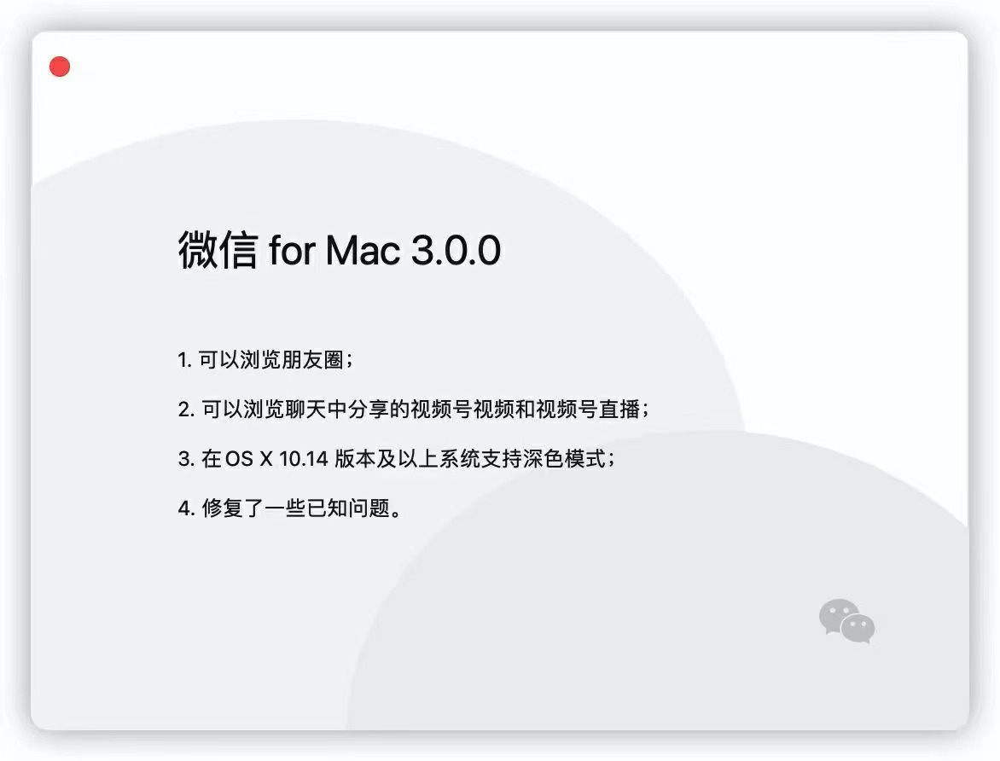
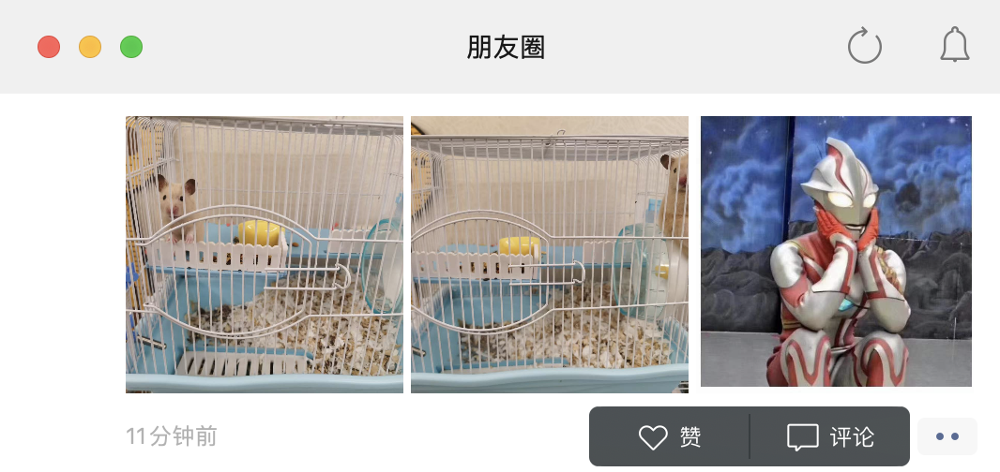

微信 Mac 版 3.0 支持浏览朋友圈：划水更方便了
大家好，我是站长 polarisxu。
有些人应该已经知晓，微信流出了 Mac 的 3.0 Beta 版本。为什么说流出呢？因为微信官网并没有提供下载。访问：https://mac.weixin.qq.com/ ，发现测试版本还是 2.6.1。
01
简单介绍下 3.0 版本的新功能。
Mac 的 3.0 版本安装后会显示一个弹窗，可以看到更新信息：

其中第一条就是：可以浏览朋友圈。在主窗口的左侧有一个朋友圈入口，如下图：
点击后会弹出一个新的窗口：

这就是你的朋友圈。在这里可以浏览，可以评论、点赞。。。
新版本是不是大大方便了大家上班划水？！不过，微信这么做目的肯定不是为了方便大家划水，我感觉目的主要是为了进一步推广它的视频号。因为在朋友圈中，别人发布的视频号视频，点击会直接进入视频号播放其视频，可以点赞、评论等。
关于推广视频号，还有一个重要的更新，那就是可以浏览聊天中的视频号视频，甚至可以参与视频号直播。你喜欢吗？不过实话说，我更在意，啥时候解决下电脑端微信抢红包呀，因为上班都损失好几个亿了。。。
此外，这次更新还实现了暗黑模式，可以根据需要自己设置。
02
说起视频号，2020 年，微信的推广力度是真的大。以上介绍的更新再一次说明对视频号支持的力度。除此之外，不知道大家是否注意到，在订阅号消息列表页顶部左侧，增加了一个提醒：有时候是朋友在看，有时候是朋友赞过。。。我开始后以为是曝光一些公众号呢，仔细一看，原来是曝光视频号，在订阅号列表都不放过曝光视频号，可见。。。不知道这个入口有多少人点击过！
说这么多，我想说的是，如果你对做视频感兴趣，可以尝试尝试视频号，说不定能收获一大票粉丝哦！
03
如果你想尝试 Mac 3.0，可以关注本公众号，回复 wechat 获取安装包。